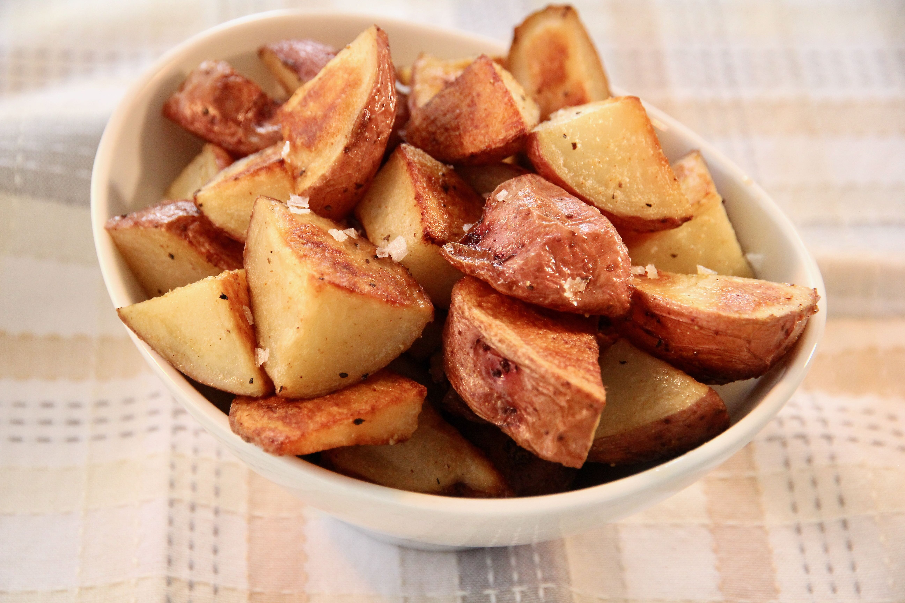

Jake's Potato Roasties
Home

Description
Modified from a Chealsea Winter recipe. Easy to make and so yummy and crispy.
Pour cheese sauce on them bad boys. You could also add sweet potatoes and pumpkin with the potatoes.
This recipe is versitile and goes with anything!
Ingredients
- 3 to 4 medium sized potatoes
- 1 tbsp vegetable oil
- 1 tbsp olive oil
- Salt
Steps
- Preheat oven to 220 degrees celsius
- Boil water
- Chop potatoes into decent sized chunks
- Once water is boiling add potatoes and boil for 15 mins
- Drain potatoes completely. Use the stove to burn off excess moisture if needed
- Thouroughly combine the dry potatoes and the oils
- Add the oiled potatoes to the baking tray
- Cook potatoes in the oven for 25 mins
- Serve with your favourite dish (Panko Chicken, anyone?) or by themselves. Yum!